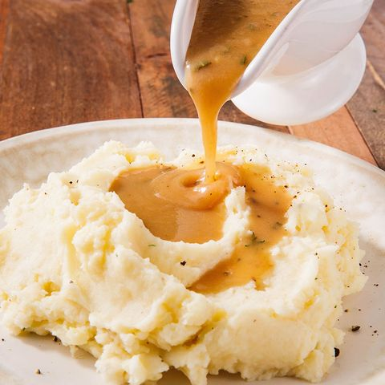

Perfect Gravy

Description
Thanksgiving is just not Thanksgiving without a drizzle
of gravy over your turkey, mashed potatoes, and stuffing.
Fortunately for you, I have the recipe for the perfect
gravy of umami goodness to tie together all of the yummy
holiday foods.
Ingredients
- 3 tbsp. butter
- 3 tbsp. all-purpose flour
- 1 cup turkey pan drippings
- 2 cup low-sodium chicken broth (or turkey stock)
- Kosher salt
- Freshly ground black pepper
- 1 tsp freshly minced thyme
- 1 tsp freshly minced sage
Steps
- In a small saucepan over medium heat, melt butter. Whisk in flour and cook until golden, 1 minute, then whisk in pan drippings. (If you have more than a cup of drippings, use it and reduce the amount of broth!)
- Bring mixture to a boil, then reduce heat and simmer gently until slightly thickened.
- Stir in fresh herbs, then whisk in 1 cup broth and return mixture to a simmer. Season with salt and pepper.
- Simmer 10 minutes, gradually adding more broth if gravy is too thick. Adjust seasoning.